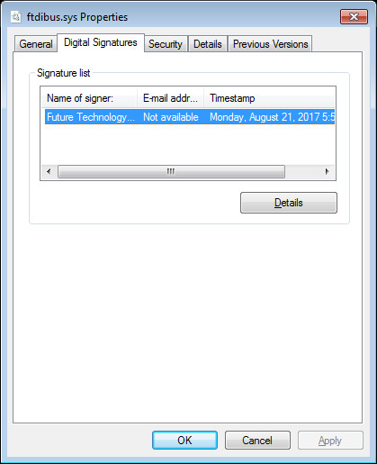
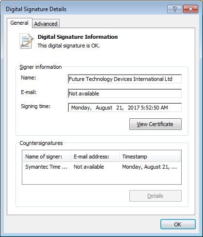
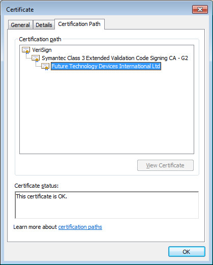
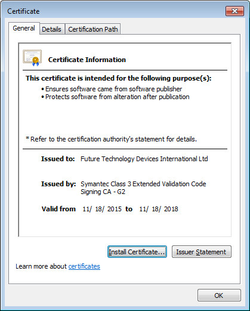
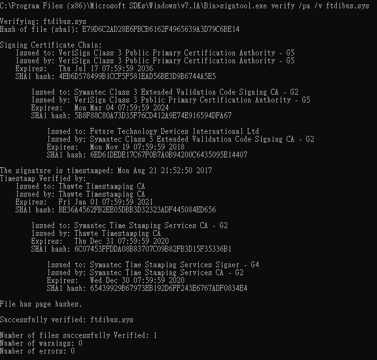
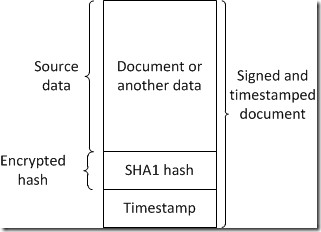
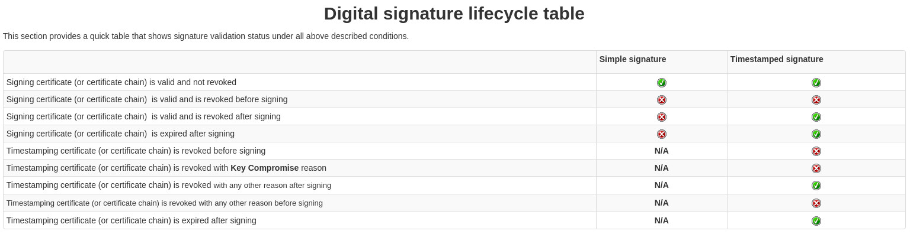

參考資料：
https://en.wikipedia.org/wiki/Timestamp
https://en.wikipedia.org/wiki/Digital_signature
https://en.wikipedia.org/wiki/Certificate_authority
https://www.sysadmins.lv/blog-en/digital-signatures.aspx
https://www.catalog.update.microsoft.com/search.aspx?q=kb4474419
https://www.catalog.update.microsoft.com/search.aspx?q=kb4490628
https://www.catalog.update.microsoft.com/search.aspx?q=KB4493730
https://docs.microsoft.com/en-us/windows-hardware/drivers/install/cross-certificates-for-kernel-mode-code-signing
https://support.microsoft.com/en-us/topic/2019-sha-2-code-signing-support-requirement-for-windows-and-wsus-64d1c82d-31ee-c273-3930-69a4cde8e64f
由於Microsoft已經公告Cross-Signing將停止支援，因此，像DigiCert Assured ID Root CA的到期日期是2021/04/15，如果目前驅動程式Signing是使用DigiCert Assured ID Root CA的Certificate或者由DigiCert Assured ID Root CA發的Cerificate，在2021/04/15之後，驅動程式必須改成給Microsoft做Signing的動作(跑WHQL流程)，否則將會遇到驅動程式無法安裝的問題，正確說法應該是，驅動程式以後都必須跑WHQL流程，不過，如果是在2021/04/15日以前做Cross-Signing的動作且Timestamp有效，都是屬於有效期內Signing的，因此，可以繼續使用，不會有安裝問題，直到ROOT CA到期，值得注意的是，在Win7系統上，新的Microsoft簽章必須放在第一個欄位(一個驅動程式可以有多個簽章)，因為Win7只認得第一個欄位的簽章
說到這裡，司徒剛好提一下另一個問題，那就是SHA1的問題，由於Microsoft已經停止SHA1的支援，因此，新的的驅動程式(應該是2021/1/1以後)只會看到一個SHA256的資訊，在WinXP、Win7、WinServer 2008會有支援的問題，也就是這三個舊系統不認識SHA256這種東西，所以驅動程式無法安裝使用，目前Microsoft有提供Win7、WinServer 2008的KB修復(KB4474419、KB4490628)，安裝這兩個KB之後，Win7、WinServer 2008就可以安裝SHA256 Singing的驅動程式，至於WinXP系統，由於WinXP本身就不檢查，因此，安裝SHA256 Signing的驅動程式不會有問題，另外，由於KB4474419會檢查MBR相關資訊，如果遇到無法安裝KB問題時，記得直接重新安裝Win7系統比較快，如果是使用Dual Signing的驅動程式，則需要確認SHA1 Timestamp部份，是否使用SHA256 Timestamp，如果是使用SHA256 Timestamp，舊系統(假如沒有上KB)一樣無法安裝使用驅動程式
Timestamp：時間戳，字串或編碼資訊用於辨識記錄下來的時間日期
Certificate：數位憑證，由認證機構(Certificate Authority, CA)發放
Digital Signature：數位簽章，用於鑑別數位資訊的方法
驅動程式的數位簽章包含數位憑證、時間戳兩部份，如下圖(ftdibus.sys)：






